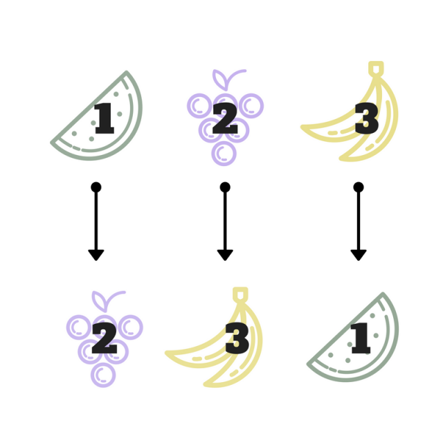

We've all seen permutations before. If you have ten distinct items, and rearrange them on a shelf, you've just performed a permutation. A permutation is actually a function that is performing the arrangement on a set of labeled objects. For simplicity, we can just number the objects and work with permuting the numbers.
If we look at the object numbers $1,\ldots,n$, then we can just call the set of the first $n$ integers under the operation permutation forms the symmetric group $S_{n}$, a collection of groups so famous it gets its own name. Here we'll take a look at permutations in a bit more depth and see that a certain type of permutation called a cycle behaves exactly the same as integers under modulo arithmetic.
Permutations of integers are done by a function $\alpha$ that maps some $i$ in $\{1,2,\ldots,n\}$ to another $j$ in $\{1,2,\ldots,n\}$. Every number in the set must get mapped somewhere in the set, though the permutation can hold some, all, or no numbers fixed. All numbers that stay fixed gives us the identity permutation, which we will call $\epsilon$.
We use a certain kind of notation for permutations that looks like this example of a permutation of the numbers 1, 2, and 3.
$$\begin{pmatrix}1&2&3\\2&3&1\end{pmatrix}$$ The top row is the original set in order. The numbers in the bottom row beneath each top number tell you where the permutation sends each original number. So, the above permutation maps $1 \to 2$, $2 \to 3$, and $3 \to 1$.
Now, "products" of permutations work like compositions of functions. You perform the first permutation, and then the next permutation is performed on the result of the first. When we do this, we work right to left, just like in composition of functions.
Quick example: if $f(x)=x+5$ and $g(x) = 2x$, then $f(g(x))$ is calculated by first applying $g$, then inserting that result into $f$. So,
$$ f(g(2)) = f(2\cdot2) = 2\cdot2 + 5 = 9$$Now, let's suppose we have two permutations on the integers $\{1,2,3\}$: $\alpha = \begin{pmatrix}1&2&3\\2&3&1\end{pmatrix}$ and $\beta = \begin{pmatrix}1&2&3\\1&3&2\end{pmatrix}$. What is $\beta\alpha$?
We can simply follow a chain. Take 1 for a start. If we apply the permutation $\alpha$, and then the permutation $\beta$, where does 1 end up?
$\alpha(1) = 2$. Now we apply $\beta$ to the result of $\alpha$ acting on 1, which is $\alpha(1) = 2$. Then $$\beta\alpha(1) = \beta(\alpha(1)) =\beta(2) = 3$$
So after applying these two permutations, 1 is sent to 3. We can do this for the other two numbers, and we get that $$\beta\alpha =\begin{pmatrix}1&2&3\\1&3&2\end{pmatrix}\begin{pmatrix}1&2&3\\2&3&1\end{pmatrix} =\begin{pmatrix}1&2&3\\3&2&1\end{pmatrix}$$
Now we'll introduce another concept and notation-that of cycles. A cycle is written just using parentheses instead of the larger notation we used before. The cycle $(123)$ denotes exactly that. Reading left to right, 1 maps to 2, 2 maps to 3, and 3 cycles back around to 1. So $(123)$ is actually just another way of expressing $\alpha = \begin{pmatrix}1&2&3\\2&3&1\end{pmatrix}$.
One other note about the shorthand: every permutation on $n$ integers can be written as the product of these disjoint cycles. When we say disjoint. we mean that a number that shows up in one cycle doesn't show up in another. (134) and (25) are disjoint cycles. We're going to study powers of a single cycle. Powers of cycles work just like powers of numbers: just as $2^3$ is $2\cdot2\cdot2$, $(134)^{3} = (134)(134)(134)$. Remember that we apply the permutations from right to left.
Let's take an example of a cycle: $\alpha = (123)$ and just compute some powers of it. $$\alpha^{2} =(123)(123)=\begin{pmatrix}1&2&3\\2&3&1\end{pmatrix}\begin{pmatrix}1&2&3\\2&3&1\end{pmatrix}=\begin{pmatrix}1&2&3\\3&1&2\end{pmatrix}=(132)$$ $\alpha^{3} = \alpha\alpha^{2}$ (again note that we apply another "round" of permutations on the left), and can be calculated in a similar way: $$\alpha^{3} = (123)(132)=\begin{pmatrix}1&2&3\\1&2&3\end{pmatrix}=\epsilon$$
Interesting notion here. Now we're back to the identity permutation. That means if we multiply the cycle $(123)$ on the left of the identity permutation $\epsilon$, we just get $(123)$. In other words, $(123)^{4} = (123)$. Then that means $(123)^{5} = (123)(123)^{4} = (123)(123) = (123)^{2}$, and $(123)^{6} = \epsilon$. Our powers of this cycle form another "cycle" that's starting to look awfully similar to something we've seen before:modulo addition.
The great thing about studying algebra is that by studying the structure of things, we can observe that two groups that looked totally unrelated actually behave very similarly. Notice that the power of a cycle of length 3, like the ones we computed above, "start over" at powers that are multiples of 3: $(123)^{3} = (123)^{6} = \epsilon$. So if we paired the cycle $(123)$ with 1, $(123)^{2}$ with 2, and $(123)^{3}$ with 0, then the behavior of this cycle under its "permutation multiplication" is identical to the behavior of $\mathbb{Z}_{3}$, the integers modulo 3, that we have previously discussed.
To extend a bit further, since we can obvious take more powers of the cycle $(123)$ than just stopping at 3, if we wanted to make the correspondence to $\mathbb{Z}_{3}$, all powers of $(123)$ that are multiples of 3 (which evaluate to the identity permutation) would correspond to 0 (the identity element under modulo addition). The powers of $(123)$ that leave a remainder of 3 when you divide the power by 3 would behave like $1 \in \mathbb{Z}_{3}$, and the powers of $(123)$ that leave a remainder of 2 would match with $2 \in \mathbb{Z}_{3}$
To write this mathematically, we can actuallymap the set of all powers of $(123)$or any cycle of length 3 to $\mathbb{Z}_{3}$. Numbers are just labels in permutations. If we have a cycle of length 3 that isn't (123), say (489), the behavior is still the same. We can just "label" 4 as the first in the cycle, 8 as the second, and 9 as the third and be right back with what we already know.
Let $n$ be the power of a cycle of length 3, which we will now call $(a_{1}a_{2}a_{3})$ to generalize. Then $(a_{1}a_{2}a_{3})^{n}$ maps to $n \bmod 3$. With this, we've connected the two groups and learned that powers of cycles of length 3 act just like integers modulo 3.
We just discovered that cycles of length 3 under powers (multiplying by itself) act just like integers modulo 3 under modulo addition. The next question we can ask is:
Take a generic cycle of length $s$, and call it $\beta = (b_{1}b_{2}\ldots b_{s})$ where each $b_{i}$ is some number or element in the permutation cycle. Then we're going to start describing distinct powers of this $\beta$ and watch what happens.
$$\begin{aligned}\beta &=\begin{pmatrix}b_{1}&b_{2}&b_{3}&\ldots&b_{s}\\b_{2}&b_{3}&b_{4}&\ldots & b_{1}\end{pmatrix}\\\beta^{2} &=\begin{pmatrix}b_{1}&b_{2}&b_{3}&\ldots&b_{s}\\b_{3}&b_{4}&b_{5}&\ldots & b_{2}\end{pmatrix}\\\beta^{3} &=\begin{pmatrix}b_{1}&b_{2}&b_{3}&\ldots&b_{s}\\b_{4}&b_{5}&b_{6}&\ldots & b_{3}\end{pmatrix}\\&\vdots\\\beta^{s-1} &=\begin{pmatrix}b_{1}&b_{2}&b_{3}&\ldots&b_{s}\\b_{s}&b_{1}&b_{2}&\ldots & b_{s-1}\end{pmatrix}\\\beta^{s} &=\begin{pmatrix}b_{1}&b_{2}&b_{3}&\ldots&b_{s}\\b_{1}&b_{2}&b_{3}&\ldots & b_{s}\end{pmatrix}=\epsilon\end{aligned}$$If this looks intimidating, just follow what $b_{1}$ gets permuted to as you take more powers. applying one $\beta$ to $b_{1}$ gives $\beta(b_{1}) = b_{2}$. Then $\beta^{2}(b_{1}) = \beta(\beta(b_{1})) = \beta(b_{2}) = b_{3}$. Next, $\beta^{3}(b_{1}) = b_{4}$. Now we start noticing the pattern, just as we did for the cycles of length 3: $\beta^{n}(b_{1}) = b_{1+n}$ while $ n < s$, the length of our cycle. Then $\beta^{s}(b_{1}) = b_{1}$ again and we're now starting over.
Do the same thing for any other element in the permutation. Follow it through the powers of $\beta$ and notice that $\beta^{n}(b_{j}) = b_{j+n}$ for any generic $j$. Now, when we take powers of the cycle that are larger than $s$, we just "start over again". So $\beta^{s+1} = \beta$, $\beta^{s+2} = \beta^{2}$, and so forth. So $\beta^{n} = \beta^{n\mod s}$ in general, whether $n \geq s$ or $ n < s$.
Now that means we have made the same observation in general that we did for cycles of length 3. We can map powers of cycles of any length $s$ to integers modulo $s$, and both groups will behave the same way, with the same "starting over" property we observed in modulo arithmetic.
What you've just discovered is a mathematical phenomenon called an isomorphism. We discuss this in another post. In a nutshell, an isomorphism is the mapping that lets us connect two groups that behave the same way, even if their elements and respective operations have nothing to do with each other. Picture two people running with the same stride length and form. Even if they are running in different locations or opposite directions, they're still behaving the same way. Two things that are structurally and behaviorally equivalent, mathematically, are called isomorphic. We just proved (a bit informally) that $\mathbb{Z}_{s}$, is isomorphic to permutation cycles of length $s$.
Modulo arithmetic is much easier to compute than powers of permutations, so if we want to study how they work, we can actually study an isomorphic group that is simpler to get the same results. As a more tangible example, molecular structures and symmetries can get really icky to study and play with. There are simpler groups that are isomorphic to these structures and their symmetries that make their study much easier. For instance, instead of having to build a model and study what happens if you rotate it twice and reflect it across its vertical symmetry once, we can map those actions to a simpler algebraic structure with a simpler multiplication, calculate the result, then map it back using the isomorphism.
Abstract mathematics allows us to strip the more complex "fluff" from a problem and reduce it to its skeleton. By looking at the skeletons, we can study the problem's mechanics more simply, and even reduce the problem to an isomorphic one that has been previously solved.